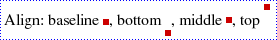
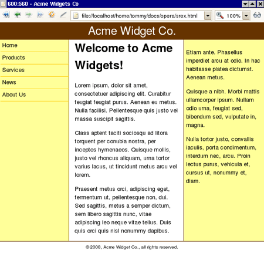

Posicionamiento estático
De hecho, este nombre no es nada adecuado. En realidad, los cuadros con
position:static no se "posicionan" en el sentido del CSS. Simplemente se disponen
en el orden en el que aparecen en el etiquetado y ocupan todo el espacio que necesitan;
éste es el comportamiento por defecto que se da cuando no se aplica ningún CSS al HTML.
Existen algunas diferencias fundamentales en la manera como se distribuyen las
cajas de bloque en comparación con la distribución de las cajas en línea; por tanto,
examinaremos los dos tipos uno a uno. Empezaremos con las cajas de bloque porque son
más sencillas.
Disposición de cajas de bloque
Si no aplicamos ninguna declaración CSS concreta, las cajas de bloque se disponen verticalmente
de arriba abajo en el orden en el que aparecen en el etiquetado.
Cada caja es normalmente
tan ancha como el documento (el elemento body), pero incluso si las hacemos más estrechas,
éstas no se distribuirán una al lado de la otra aunque haya espacio, sino que se seguirán
situando la una bajo la otra. Podéis imaginároslo como si cada caja de bloque tuviera un
salto de línea implícito antes y después, ya que así se garantiza que tendrá una "línea"
propia.
La distancia vertical entre dos cajas de bloque se controla con la propiedad
margin-bottom (margen-inferior) de la primera caja y la propiedad margin-top
(margen-superior) de la segunda caja (en este curso ya hemos visto cómo manipular
estas propiedades). Para las cajas del flujo normal, es decir, las cajas que no son
flotantes o que no tienen un posicionamiento absoluto, los márgenes verticales entre
dos cajas de bloque adyacentes se superpondrán, de manera que el resultado final no
será la suma de los dos márgenes, sino el mayor de los dos, tal como se puede ver en
la figura 1 que se muestra más adelante.
Mirad el siguiente fragmento de HTML:
<p style="margin-bottom:40px">This paragraph has a 40px bottom margin.</p>
<p style="margin-top:20px">This paragraph has a 20px top margin.</p>
This paragraph has a 40px bottom margin.
This paragraph has a 20px top margin.
Se impone el margen de 40px sobre el de 20px
Una caja de bloque incluirá sólo otras cajas de bloque o sólo cajas en línea.
Si un elemento de bloque contiene una mezcla de hijos de bloque y en línea
(algo permitido pero semánticamente cuestionable), se generará lo que se conoce
como cajas de bloque anónimas para incluir las cajas hijas insertadas, de manera
que la madre contenga sólo cajas de bloque.
Podéis especificar las dimensiones de una caja de bloque con las propiedades width
(anchura) y height (altura). También podéis especificar los márgenes vertical y horizontal.
El valor inicial (por defecto) para width y height es auto, y el valor inicial para
las propiedades de margen es 0. Estos factores combinados significan que una caja
de bloque será por defecto tan ancha como su madre, como muestra la figura 2.
Disposición de cajas en línea
Las cajas en línea se generan por defecto a partir de los elementos HTML en línea,
pero también hay cajas en línea anónimas generadas para incluir el contenido de texto
de los elementos.
Las cajas en línea se distribuyen horizontalmente, una después de otra, en el orden
en el que aparecen en el etiquetado.
Según la propiedad direction, los cuadros insertados
se distribuirán de izquierda a derecha (direction:ltr) o de derecha a izquierda
(direction:rtl). La dirección de izquierda a derecha se utiliza, por ejemplo, con los
idiomas europeos, mientras que la de derecha a izquierda se utiliza con idiomas como el
árabe y el hebreo
El grupo de cajas en línea que forman una línea en la pantalla (o en el papel) está
contenido en otro rectángulo más, que se conoce como caja de línea. Las cajas de línea
se distribuyen verticalmente en su bloque madre, sin ningún espacio entre ellas.
Podemos modificar la altura de las cajas de línea con la propiedad line-height.
Para las cajas en línea no podemos especificar ninguna dimensión.
Podemos especificar los márgenes horizontales, pero no los verticales.
Si es necesario, una caja en línea se puede dividir en varias cajas en línea distribuidas
por dos o más cajas de línea. Cuando se produce una división de este tipo, todos los márgenes
horizontales y separaciones, y todos los bordes verticales, se aplicarán sólo antes de
la primera caja y después de la última caja. Imaginémonos un documento con la regla siguiente para los elementos em:
<p style="width:200px; margin:0 auto;">
See how <em style="margin:0 1em;border: 1px dotted blue;">an inline box may be split
over two or more
line boxes</em> if necessary
</p>
See how an inline box may be split over two or more line boxes if necessary
La alineación vertical de las cajas en línea dentro de la caja de línea que
las contiene está determinada por la propiedad vertical-align (alineación-vertical).
El valor por defecto es baseline, lo que significa que las cajas en línea se alinean
de manera que sus líneas base de texto quedan alineadas. La línea base es la línea
imaginaria sobre la que se sitúan las letras sin astas descendentes. Esta línea
se sitúa un poco por encima de la parte inferior de la caja de línea para dejar espacio
para las astas ascendentes de las letras en minúsculas, tal como muestra la figura 4.
Figura 4. Las letras se sitúan sobre la línea base imaginaria.
Observad que la propiedad vertical-align se aplica sólo a las cajas en línea y
a las celdas de tabla, y no se hereda. La figura 5 muestra algunas imágenes pequeñas
con diferentes alineaciones verticales.

Figura 5. Las imágenes situadas con los valores de la propiedad vertical-align del CSS
Cuando la anchura total de las cajas en línea en una caja de línea es inferior
a la anchura de la caja de línea en sí, la alineación vertical se controla con
la propiedad text-align.
Con text-align:justify (alinear texto: justificar) se inserta un espacio adicional
entre las cajas en línea, si es necesario, para alinear el contenido a la izquierda y a
la derecha. Esta propiedad se aplica a las cajas de bloque, a las celdas de tablas y
a los bloques en línea, y se hereda. La figura 6 muestra el resultado de aplicar valores
diferentes de la propiedad text-align al texto que hay en el interior de las celdas de una tabla.
Posicionamiento relativo
El posicionamiento relativo es un sistema de posicionamiento de CSS, pero está más
relacionado con el "posicionamiento" estático que con sus primos-hermanos:
el posicionamiento absoluto y el fijo.
Un elemento con position:relative se coloca en principio igual que cualquier elemento estático;
de bloque o insertado. Pero entonces sucede algo muy interesante: la caja generada se
desplaza según las propiedades top, bottom, left y right.
Lo que hay que recordar sobre el posicionamiento relativo es que sólo
se desplaza la caja generada. El elemento sigue estando allí donde estaba
en el flujo del documento estático. Aquí es donde "ocupa espacio" respecto
a los otros elementos. Eso significa que la caja desplazada puede acabar
encima de otras cajas de elementos, ya que éstas siguen actuando como si
el elemento con un posicionamiento relativo se hubiera quedado donde debía
estar antes de aplicar el posicionamiento. Respecto al flujo del documento,
el elemento no se ha movido; es sólo el resultado visual final lo que muestra
la caja desplazada. Veamos cómo funciona en la práctica.
Ponemos un span con un color verde de fondo dentro de un párrafo:
See the Pen position relative example 1 by F.J. ESCACENA SÁNCHEZ (@jescacena) on CodePen.
Ahora aplicamos a ese span un position:relative:
See the Pen position relative example 2 by F.J. ESCACENA SÁNCHEZ (@jescacena) on CodePen.
La caja se aleja del borde especificado; por lo tanto, top:1em desplaza el cuadro
1 em desde la posición superior, es decir, hacia abajo. Los números negativos desplazan
el cuadro en la dirección opuesta y, por lo tanto, bottom:-1em es lo mismo que top:1em.
El ejemplo que hemos visto explica el posicionamiento relativo, pero no parece muy útil,
¿verdad? Así pues, ¿para qué sirve el posicionamiento relativo? Echemos un vistazo a
un ejemplo más complicado.
Disposición de múltiples columnas con requisitos de orden en el código fuente
Hay un tipo de composición que es muy habitual en las páginas web. Incluye un encabezamiento,
que normalmente contiene algún logotipo o insignia, bajo la que hay dos o más "columnas"
una al lado de la otra. Al final suele haber un pie de página que ocupa toda la anchura,
quizá con el aviso de copyright o la información de contacto. La figura 7 muestra un
ejemplo de este tipo de composición.

Figura 7. Una composición típica con múltiples columnas entre un encabezamiento y un pie de página
En la Edad Oscura (la década de 1990), este tipo de distribución se solía crear con tablas.
Esto es un uso inadecuado del etiquetado del HTML para finalidades presentacionales,
nada aconsejable; por lo tanto, en este curso no lo enseñaremos. CSS ofrece maneras de
conseguir esto mismo con display:table-cell y similares, pero esta solución tiene
un inconveniente importante: no hay ninguna versión de Internet Explorer que lo acepte,
de modo que tampoco la veremos. Sólo nos quedan dos opciones: los elementos flotantes y
el posicionamiento absoluto. Estos dos métodos tienen ventajas e inconvenientes, pero si
queréis un pie de página que ocupe toda la anchura y no sabéis de entrada qué columna
será la más larga, entonces necesitaréis los elementos flotantes para garantizar
la integridad del diseño.
El problema de los elementos flotantes es que sólo se desplazan hacia la derecha o
la izquierda hasta que tocan el borde del bloque padre u otro elemento flotante.
Esto quiere decir que las columnas flotantes deben aparecer en el orden correcto en el etiquetado.
Pero algunas veces se quiere tener un orden presentacional diferente del orden del código
fuente. Quizá os interese que el contenido aparezca antes de la navegación, por ejemplo,
con el fin de mejorar la usabilidad de la navegación con el teclado y la optimización
en motores de búsqueda. Esto se puede conseguir, incluso con elementos flotantes,
haciendo un buen uso de los márgenes negativos y el posicionamiento relativo;
veamos cómo hacerlo. Empezaremos con un documento HTML que nos servirá de base
para ir trabajando.
See the Pen position relative example 3 by F.J. ESCACENA SÁNCHEZ (@jescacena) on CodePen.
Imaginaos que el departamento de diseño ha especificado que la navegación debe ir a
la izquierda, la barra lateral a la derecha y el contenido principal en la columna de
en medio. El encabezamiento y el pie de página deben ocupar toda la anchura de la página,
pero no sabemos cuál de las tres columnas será la más larga. El orden del código fuente
viene determinado por los expertos en accesibilidad y usabilidad y no es negociable.
¿Cómo se pueden combinar todos estos requisitos para conseguir una composición que funcione?
Para que funcione, deberéis añadir un elemento adicional al etiquetado.
Es inevitable, pero un elemento adicional es algo que no os debería preocupar demasiado.
Necesitaréis un elemento que envuelva las tres "columnas".
<div id="header">Header</div>
<div id="wrapper">
<div id="main">Main content</div>
<div id="sidebar">Sidebar</div>
<div id="nav">Navigation</div>
</div>
<div id="footer">Footer</div>
Los diseñadores (que, por suerte, son conscientes de la accesibilidad y de la
independencia de dispositivo) han estipulado que la navegación debe tener una
anchura de 12 em y la barra lateral, de 14 em. La columna con el contenido principal
debe tener una anchura fluida, de manera que la composición se adapte a diferentes
tamaños de ventanas, ya que las composiciones con una anchura fija no son demasiado
fáciles de utilizar por el usuario. Para evitar que las líneas de texto sean demasiado
largas y dificulten la legibilidad, deberéis limitar la composición a una anchura máxima.
Para evitar el solapamiento en ventanas sumamente estrechas, también deberéis limitar
la composición a una anchura mínima. Dentro de estas limitaciones, la composición se debe
centrar horizontalmente en la ventana del navegador.
A continuación, asignad las anchuras a la navegación y a la barra lateral y definid
las limitaciones de anchura y el centrado general añadiendo las reglas siguientes
al final del archivo CSS:
body{
margin: 0 auto;
min-width: 40em;
max-width: 56em;
}
#sidebar {
width: 13em;
padding: 0 0.5em;
background-color: #ff6;
}
#nav {
width: 11em;
padding: 0 0.5em;
background-color: #ddd;
}
Si observáis el código con atención, veréis que las anchuras están fijadas en
13 em y 11 em en lugar de 14 em y 12 em. Esto es así porque necesitamos
un poco de separación horizontal; no queremos que el contenido de estas columnas
toque los bordes, ya que no queda demasiado bien. La separación se añade a la anchura,
con lo cual 13 em + 0,5 em + 0,5 em suman un total de 14 em, que es lo que queremos.
See the Pen position relative example 4 by F.J. ESCACENA SÁNCHEZ (@jescacena) on CodePen.
Con este código se hacen flotar las columnas, sí, pero no se muestran en el
orden correcto. Además, la columna del contenido principal es demasiado estrecha.
¿Y qué ha pasado con el pie de página?
En primer lugar, nos encargaremos del pie de página. El problema es que hemos
hecho flotar las tres columnas, con lo que han quedado fuera del flujo del documento.
El pie de página queda justo debajo del encabezamiento y la caja de línea que contiene
el texto se ha acortado, de manera que la palabra "Footer" aparece a la derecha de
los elementos flotantes. Podemos solucionarlo haciendo que el pie de página esté a
una cierta distancia de todas las columnas flotantes. Añadid la regla siguiente a
vuestro archivo CSS:
#footer {
clear: left;
border-top: 1px solid #369;
}
See the Pen position relative example 5 by F.J. ESCACENA SÁNCHEZ (@jescacena) on CodePen.
Y ahora nos dedicaremos a las tres columnas.
Lo haremos paso a paso, y durante un momento todo tendrá un aspecto horrible; pero no os desesperéis
porque al final todo acabará bien.
La clave es el elemento de envoltorio. Definiremos unos márgenes izquierdo y
derecho que se correspondan con las anchuras de las columnas laterales
(la navegación y la barra lateral). La columna del contenido principal ocupará
toda la anchura del envoltorio y las columnas laterales se desplazarán hacia el
espacio que dejan vacío los márgenes. ¿Suena complicado? No os preocupéis,
lo iremos haciendo poco a poco. En primer lugar definiremos los márgenes
del envoltorio añadiendo la regla siguiente al archivo CSS:
#wrapper {
margin: 0 14em 0 12em;
padding: 0 1em;
}
Definimos los márgenes superior e inferior a 0, el margen derecho en 14 em (para la
barra lateral) y el margen izquierdo en 12 em (para la navegación). También hemos
añadido 1 em de separación horizontal porque no queremos que el contenido
toque las columnas laterales, ya que debe respirar.
El siguiente paso es hacer que la columna del contenido principal ocupe
toda la anchura de su elemento envoltorio padre; el código también define
un color de fondo chillón para esta columna, temporalmente:
#main {
float: left;
width: 100%;
background-color: lime;
}
See the Pen position relative example 5 by F.J. ESCACENA SÁNCHEZ (@jescacena) on CodePen.
Lo que debemos hacer ahora es conseguir que nuestras columnas laterales
se desplacen hacia este espacio en blanco.
De momento, nos dedicaremos a la barra lateral, que es flotante y ya tiene la
anchura correcta, pero como la columna #main tiene una anchura del 100% la barra
lateral se desplaza hacia abajo. ¿Cómo podemos hacer que suba y se coloque
al lado de #main teniendo en cuenta que #main ocupa toda la anchura? Lo haremos
en dos pasos: en primer lugar, la moveremos hacia arriba y, después,
la desplazaremos hacia el margen.
Para conseguir que la barra lateral flotante, que se ha desplazado hacia abajo,
vuelva a ir hacia arriba, utilizaremos un truco muy ingenioso. Añadid lo siguiente
a la regla #sidebar:
#sidebar {
float: left;
width: 13em;
padding: 0 0.5em;
background-color: #ff6;
margin-left: -14em;
}
See the Pen position relative example 6 by F.J. ESCACENA SÁNCHEZ (@jescacena) on CodePen.
Con un margen izquierdo negativo igual a la anchura de la barra lateral,
estamos moviendo el elemento hacia el interior del envoltorio y ya no se
desplaza hacia abajo. El problema es que queda sobre el contenido.
Deberéis desplazarla hacia el margen sin que vuelva a ir hacia abajo,
y aquí es donde entra en juego finalmente el posicionamiento relativo.
Éste hace precisamente lo que queremos: desplaza la caja generada
sin mover el elemento en sí. Añadid las propiedades destacadas del código
siguiente a la regla para #sidebar:
#sidebar {
float: left;
width: 13em;
padding: 0 0.5em;
background-color: #ff6;
/*margin-left: -14em;*/
position: relative;
left: 15em;
}
See the Pen position relative example 7 by F.J. ESCACENA SÁNCHEZ (@jescacena) on CodePen.
Hacemos lo mismo para la columna de navigation:
#nav {
float: left;
width: 11em;
padding: 0 0.5em;
background-color: #ddd;
margin-left: -100%;
position: relative;
right: 13em;
}
See the Pen position relative example 8 by F.J. ESCACENA SÁNCHEZ (@jescacena) on CodePen.
Otros usos del posicionamiento relativo
El uso más habitual del posicionamiento relativo no implica desplazar la caja generada.
Esto puede sonar extraño: ¿por qué deberíais utilizar el posicionamiento relativo sin desplazar la caja?
Explicaremos esta razón en el apartado siguiente porque también tiene que ver con el posicionamiento absoluto.
Así pues, deberéis esperar un poco.
Definir position:relative (sin desplazar la caja) también puede ser útil con algunos problemas de
representación extraños de Internet Explorer. Activa la famosa propiedad interna hasLayout, que tiene un
impacto muy importante en la representación que hace Internet Explorer de los elementos.